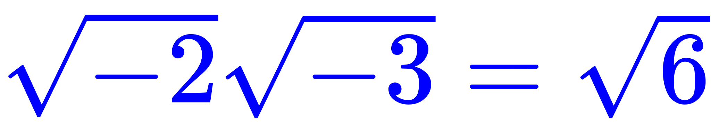

补充说明前几篇流水帐当中的细节。
比方说《可视化复分析》当中就提到，即便是欧拉也犯过「」的错误，这就是把虚数单位写成「根号负一」的传统风俗习惯的副作用。至于这「毕达哥拉斯路径依赖」到底有多大祸害，可以在高考里面体验一下嘛，还就用欧拉都会犯的错误那种。按照兲朝教育水平揣测，肯定能坑到一票学生。仅仅做成填空题选择题还不够损，应该在压轴大题里面埋个雷，这才能激化矛盾制造冲突增加剧情跌宕起伏程度。
所以说，到了正经的「复变函数」「复分析」课程，定义虚数单位都只从实数导出，通常是以「有序实数对」的方式，如(0, 1)就表示「i」。因此，复数天生是二维的存在，这句话并不是难以理解。即便在中学讲不到这么深，也得强调「根号负一」的写法和正确理解存在偏差，否则就是误人子弟。
还有一件事，提到了双色甚至四色套印，也不是什么奇怪的事情，市面上很多「精品教材」都这么印刷，虽然其内容与「精品」字眼略有偏差，但是价格倒是对得起鸡鸣狗盗之徒反复炒作的功劳或苦劳。
而「强调色」的选择，恐怕也会被豪门贵种走兽派用来诈骗抓壮丁。如果要唯物主义的作出决定以求在最大范围内凝心聚力，那么红色和蓝色两种就够了。因为，实体出版等场合白纸黑字的减色系统三原色是「红黄蓝」，而计算机显示器等场合黑底白字的加色系统三原色是「红绿蓝」，红蓝两色是交集。
前面提到了为了向着减轻码农负担的规范化「HTML/CSS」靠拢，为了不使用临时属性，很多当代站点不提供字体颜色功能，包括但不限于知乎，这样会有损于用户体验。而很多论坛程序提供的字体选项又太过于充沛，并且提供不同配色的模板，导致了背景色与前景色之间激化矛盾制造冲突增加剧情跌宕起伏程度之现象存在。所以，如果要达成共识，那么就提供红蓝两色好了，其它不管了。
顺便，在《流水帐（十六）》的结尾，提到了因为兲朝防火长城从中作梗，无法访问曾经使用的Bindex手帐活页相关站点，所以没有配图。不过呢，前几天重装旧笔记本系统，翻出当年为了内部培训而做的演示文稿。内容也不涉密，就是把Bindex宣传小册子上面的内容照搬到PPT当中而已。
下面把这42页罗列如下：


只不过，配图并非从实体扫描而成，而是用Excel辛辛苦苦一点一点画出来的，比方说这样：

怎么说呢，看到灌水机到处叫嚣什么「师门」什么「同学」追着我喷，硬要抓壮丁收编。每次我都据理力争，从来也没见过什么世外高人谆谆教导过我什么，我的能力增长除了工作经验就是积极主动的「自学」。就比方说这个「手帐」相关内容吧，市面上公开发行的东西，自己买来看看并坚持使用下去，自然就可以进步喽。这很奇怪么？